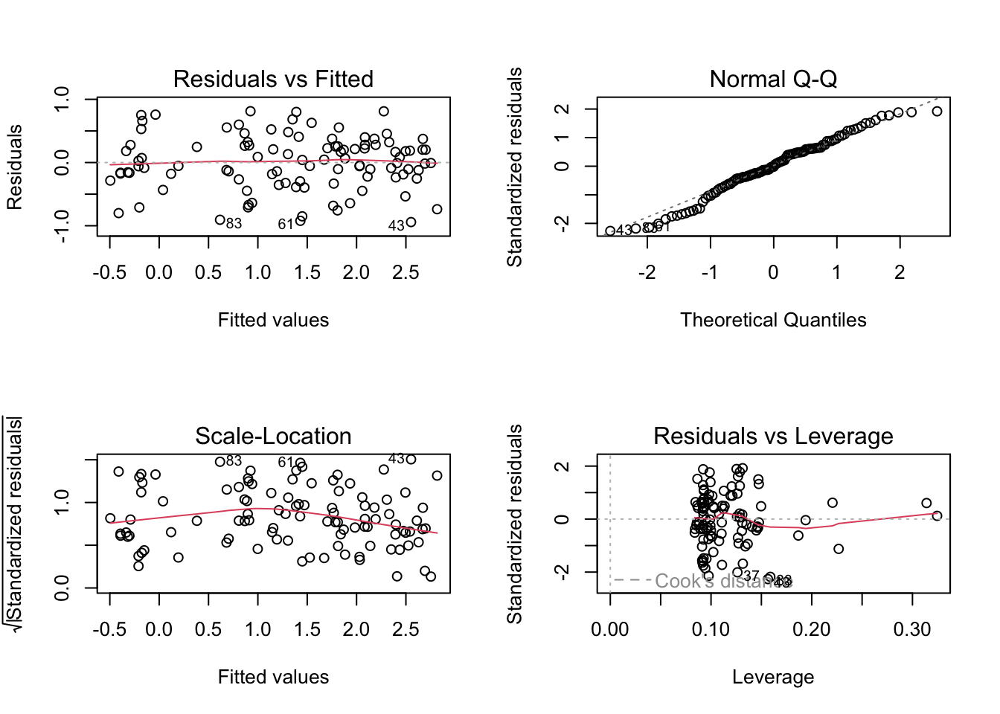
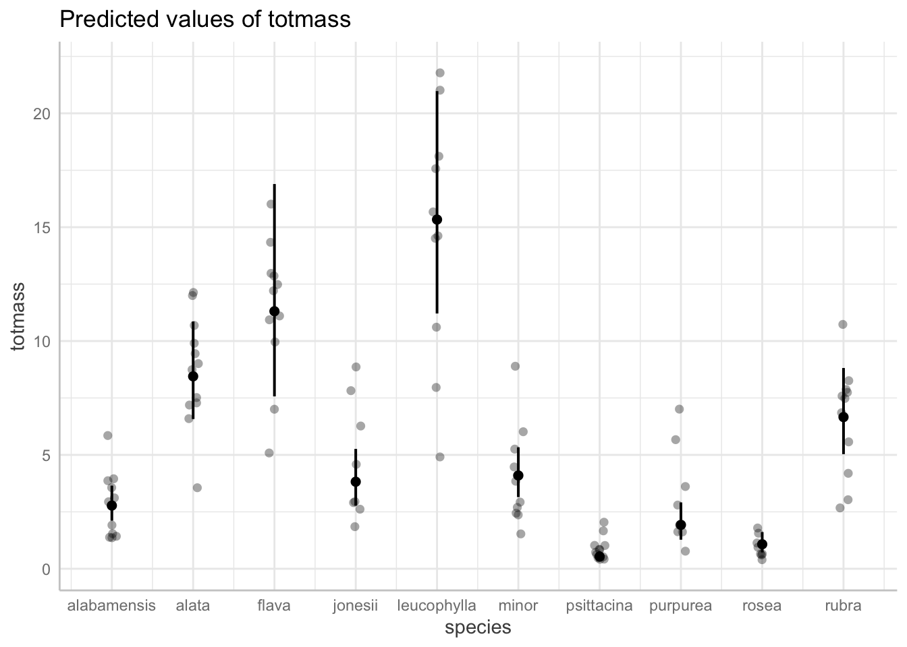

Code
knitr::opts_chunk$set(echo = TRUE, message = FALSE, warning = FALSE)Links: rendered HTML page, Github repo
The Sarracena genus are a group of North American carnivorous plants that have radiated into a number of similar but ultimately different species (Stephens et al. 2015). They are characterized by their pitcher shape structures which lures insects and thus are known as the pitcher plants. They typically grow in nitrogen-low and nutrient-poor soils, which includes bogs, wetlands, and fens (Srivastava et al. 2011).
Sarracena are studied for a number of reasons. Sarracena play a very important ecological role in their ecosystems and food webs and therefore could be an indicator of an environment’s health (Hoekman 2010). Our study aims to investigate how morphological, physiological, and/or taxonomic Sarracenia characteristics predict total plant biomass. Being able to predict plant biomass from Sarracenia characteristics allows for a faster and non-destructive method to assess the development of the plant, and in extension, ecosystem health.
Using the data obtained from “Effects of Prey Availability on Sarracena Physiology”, our study investigates how Sarracenia characteristics predict biomass (A. Ellison and Farnsworth 2021). Our null hypothesis states that none of the listed variables can predict plant biomass. Our alternative hypothesis is that Sarracenia species, specific leaf area, chlorophyll levels, photosynthetic rate, feedlevel, and/or number of pitchers and phyllodes produced by the plant to be predictors of total plant biomass under multiple linear regression.
knitr::opts_chunk$set(echo = TRUE, message = FALSE, warning = FALSE)library(tidyverse)
library(here)
library(janitor)
library(ggeffects)
library(performance)
library(naniar)
library(flextable)
library(car)
library(broom)
library(corrplot)
library(AICcmodavg)
library(GGally)plant <- read_csv(here("data", "knb-lter-hfr.109.18", "hf109-01-sarracenia.csv")) |>
clean_names() |> #Clean column names
dplyr::select(totmass, species, feedlevel, sla, chlorophyll, amass, num_lvs, num_phylls) #Select relevant columnsEllison et al. made 6 feeding levels, accounting for the sizes of different species, and assigned two of each Sarracenia species to each level (A. Ellison and Farnsworth 2021). Total plant biomass, feeding level of wasps, specific leaf area, chlorophyll, total number of phyllodes, and total number of pitchers were measured after the feeding period, while photosynthetic rate was measured prior to treatment (A. Ellison and Farnsworth 2021). The data from “Effects of Prey Availability on Sarracenia Physiology” recorded these physiological, morphological, and taxonomic characteristics of the Sarracena into a dataframe called plants. Refer to data dictionary at the bottom of the page for explanations of column names.
Then, the dataframe was checked for missing data (Figure 1). Some data points were missing, so rows with missing data were dropped, resulting in a new dataframe called plant_subset. This is the dataset we used going forward with the analysis.
In figure 2, Pearson’s correlation coefficients were calculated between every numerical predictor variable. There were a mix of positive and negative correlations. However, none of the correlation values had an absolute value above 0.5, meaning they were all weakly correlated.
To further investigate the relationships between variables, a pair plot was created in figure 3. Figure 3 denotes that there are significant, although weak, correlations between some predictor variables, which is denoted with asterisks.
To see if there is more evidence for the null or alternative hypothesis, the null and full models were created. The null model assumes no predictor variables, while the full model uses all the predictor variables (feeding level, specific leaf area, chlorophyll content, number of phyllodes, number of phyllodes and pitcher plants, and photosynthetic rate).
Under linear regression models, the data is assumed to be homoscedastic and normal. However, the diagnostic plots of the full model (figure 4) suggest that the data is not homoscedastic nor normal. Further statistical checks using the check_normality and check_heteroscedasticity also indicate heteroscedasticity and non-normality. Thus, the full model was put through a log transformation, called the “full log model.” When log transformed, the data is both homoscedastic and normal according to diagnostic plots (Figure 5) and statistical checks.
In order to find the best model, several other models were created. Model 2 uses species as the only predictor variable. Species was chosen as the sole variable because it is reasonable to believe that different species are different sizes and thus different biomasses; the authors behind the data even created different feeding levels based on the different sizes of the Sarracena species (A. Ellison and Farnsworth 2021).
Model 3 uses species, chlorophyll, and feed level because other studies have found correlations between the plant’s color (due to chlorophyll), plant size, and its prey capture (Cresswell 1993).
Model 4 includes species, specific leaf area, and photosynthetic rate as predictor variables. Specific leaf area and photosynthetic rate indicates how Sarracena receive nutrients other than the ones they gain from prey (A. M. Ellison and Gotelli 2002). The diagnostic plots for models 2, 3, and 4 are shown in figures 6, 7, and 8 respectively; all visual and statistical assumptions are met for linear regression.
When the full model was checked for variance inflation factors (VIF), none of the VIF values were above 5. This indicates a lack of multicollinearity that would otherwise interfere with the clarity of the linear regression model. The only exception was species, which had as VIF greater than 5; however, species is kept as a predictor variable because it is categorical.
Lastly, a Akaike Information Criterion (AIC) check was done on the full log model, null model, and models 2-4. The full log model had the lowest AIC value, indicating the full log model had the best predictive capacity and thus is the most fit model.
gg_miss_var(plant) #Visualize missing data
Figure 1. Visualization of Missing Data in “plant” dataframe
The y-axis are the variables (columns) in the dataframe and the x-axis marks how many rows have missing data per variable.
#Drop missing data
plant_subset <- plant |>
drop_na(sla, chlorophyll, amass, num_lvs, num_phylls)#Calculate Pearson's r for numerical values only
plant_cor <- plant_subset |>
dplyr::select(feedlevel:num_phylls) |>
cor(method = "pearson")
#Create correlation plot
corrplot(plant_cor,
method = "ellipse", #Change shape of item in cells
addCoef.col = "black") #Add coefficient in black text
Figure 2. Pearson’s correlation plot of predictor variables
The positively correlated predictor variables are colored in blue and Pearson’s correlation values of greater than 0, while the negatively correlated predictor variables are colored in red and have a coefficient of lesser than 0.
plant_subset |>
dplyr::select(species:num_phylls) |>
ggpairs()
Figure 3. Pair plot of predictor variables
Above the diagonal are Pearson correlation coefficients between the predictor variables, with asterisks indicating a significant correlation. Along the diagonal are density plots for each variable, and below the diagonal are the scatter plots for each variable.
#Create a null and a full model - fit multiple linear models in order to see which one is best
null <- lm(totmass ~ 1, data = plant_subset)
#Assume no relationship between total mass and predictor variables
#1 indicates absence of all other predictors
full <- lm(totmass ~ species + feedlevel + sla + chlorophyll + amass + num_lvs + num_phylls, data = plant_subset)
#Assume predictor variables can predict biomasspar(mfrow = c(2, 2))
plot(full)
Figure 4. Diagnostic plots for full model
The Residual vs Fitted plot checks for constant variance (homoscedasticity) among the residuals. The Scale-Location plot also checks for homoscedasticity, but using the square root of the residuals; both plots show a change in pattern from more clustered points on the left to more scattered points on the right, suggesting heteroscedasticty.
The Residuals vs Fitted checks for constant variance of residuals, but the clustering of points on the left side of the plot indicators non-homoscedastic residuals, while the Normal Q-Q checks for normality but the tail ends suggest lack of normality. The Scale-Location shows the square root of the standardized residuals, which also suggests heteroscedastic residuals because there is a pattern of clustering to the spreading of points from left to right. Lastly, the Residuals vs Leverage plot shows outliers in the data, and there do not appear to be any.
check_normality(full) #The data is likely not normal. Warning: Non-normality of residuals detected (p < .001).check_heteroscedasticity(full) #The data is likely heteroscedastic. Warning: Heteroscedasticity (non-constant error variance) detected (p < .001).#Log transformations of null and full model
null_log <- lm(log(totmass) ~ 1, data = plant_subset)
full_log <- lm(log(totmass) ~ species + feedlevel + sla + chlorophyll + amass + num_lvs + num_phylls, data = plant_subset)
par(mfrow = c(2, 2))
plot(full_log)
Figure 5. Diagnostic plots for full log model
The Residual vs Fitted and Scale-Location plot checks for homoscedasticity; both plots don’t show can non-random patterning, indicating homoscedasticity. The Normal Q-Q plot checks for data normality; the data fits the linear line indicating normality. Lastly, the Residuals vs Leverage checks for outliers outside Cook’s distance, but there are no outliers.
check_normality(full_log)OK: residuals appear as normally distributed (p = 0.107).check_heteroscedasticity(full_log)OK: Error variance appears to be homoscedastic (p = 0.071).#Create other models
model2_log <- lm(log(totmass) ~ species, data = plant_subset) #Log total mass, predictor variable is species
model3_log <- lm(log(totmass) ~ species + feedlevel, data = plant_subset) #Log total mass, predictor variable is species and feedlevel
model4_log <- lm(log(totmass) ~ species + feedlevel + chlorophyll, data = plant_subset) #Log total mass, predictor variable is species, feedlevel, and number of pitchers and phyllodes produced by plant par(mfrow = c(2, 2)) #Check assumptions for model 2
plot(model2_log)
Figure 6. Diagnostic plots for model 2
The Residual vs Fitted and Scale-Location plot checks for homoscedasticity; both plots don’t show can non-random patterning, indicating homoscedasticity. The Normal Q-Q plot checks for data normality; the data fits the linear line indicating normality. Lastly, the Residuals vs Leverage checks for outliers outside Cook’s distance, but there are no outliers.
check_normality(model2_log) #Check assumptions for model 2OK: residuals appear as normally distributed (p = 0.374).check_heteroscedasticity(model2_log)OK: Error variance appears to be homoscedastic (p = 0.100).par(mfrow = c(2, 2)) #Check assumptions for model 3
plot(model3_log)
Figure 7. Diagnostic plots for model 3
The Residual vs Fitted and Scale-Location plot checks for homoscedasticity; both plots don’t show can non-random patterning, indicating homoscedasticity. The Normal Q-Q plot checks for data normality; the data fits the linear line indicating normality. Lastly, the Residuals vs Leverage checks for outliers outside Cook’s distance, but there are no outliers.
check_normality(model3_log) #Check assumptions for model 2OK: residuals appear as normally distributed (p = 0.339).check_heteroscedasticity(model3_log)OK: Error variance appears to be homoscedastic (p = 0.110).par(mfrow = c(2, 2)) #Check assumptions for model 4
plot(model4_log)
check_normality(model4_log) #Check assumptions for model 2OK: residuals appear as normally distributed (p = 0.139).check_heteroscedasticity(model4_log)OK: Error variance appears to be homoscedastic (p = 0.378).Figure 8. Diagnostic plots for model 4
The Residual vs Fitted and Scale-Location plot checks for homoscedasticity; both plots don’t show can non-random patterning, indicating homoscedasticity. The Normal Q-Q plot checks for data normality; the data fits the linear line indicating normality. Lastly, the Residuals vs Leverage checks for outliers outside Cook’s distance, but there are no outliers.
#Evaluate multicollinearity
car::vif(full_log) #Variance inflation factor check for full model GVIF Df GVIF^(1/(2*Df))
species 42.351675 9 1.231351
feedlevel 1.621993 1 1.273575
sla 1.999989 1 1.414210
chlorophyll 1.949828 1 1.396362
amass 2.872084 1 1.694722
num_lvs 2.813855 1 1.677455
num_phylls 2.995510 1 1.730754AICc(full_log)[1] 133.9424AICc(model2_log)[1] 157.5751AICc(null_log)[1] 306.0028MuMIn::AICc(full_log, model2_log, model3_log, model4_log, null_log) df AICc
full_log 17 133.9424
model2_log 11 157.5751
model3_log 12 159.6218
model4_log 13 146.4839
null_log 2 306.0028#full log model has lowest AIC, it is the best model MuMIn::model.sel(full_log, model2_log, null_log)Model selection table
(Int) ams chl fdl num_lvs num_phy sla spc df
full_log -1.3390 0.002338 0.004368 -0.4743 0.09176 -0.03959 -0.002493 + 17
model2_log 0.8836 + 11
null_log 1.3500 2
logLik AICc delta weight
full_log -46.371 133.9 0.00 1
model2_log -66.337 157.6 23.63 0
null_log -150.941 306.0 172.06 0
Models ranked by AICc(x) The full log model, which includes all 7 predictor variables (Sarracenia species, specific leaf area, chlorophyll levels, photosynthetic rate, feedlevel, and/or number of pitchers and phyllodes) was the best fit model. The full model conformed to assumptions of homoscedasticity and normality for linear regression, shown in Figure 5. The model also had the lowest AIC value, indicating it was the best-fitted model, even when compared with other models that had different combinations of predictor variables.
The extremely small p-value of the full log model (2.2e-16) suggests there is sufficient evidence to reject the null hypothesis. Thus, there is evidence suggesting that multiple variables come together to predict biomass. Biologically, this means that the seven predictor variables all likely correlate with plant biomass. Chlorophyll levels correspond with photosynthetic rate, which in turn can affect the plant’s ability to produce energy and grow. The number of pitchers and phyllodes could also predict biomass because heavier plants are likely heavier because they have more structures.
summary(full_log)
Call:
lm(formula = log(totmass) ~ species + feedlevel + sla + chlorophyll +
amass + num_lvs + num_phylls, data = plant_subset)
Residuals:
Min 1Q Median 3Q Max
-0.88872 -0.20811 0.02825 0.24218 0.78287
Coefficients:
Estimate Std. Error t value Pr(>|t|)
(Intercept) -1.339043 0.597727 -2.240 0.027624 *
speciesalata 1.113163 0.184021 6.049 3.56e-08 ***
speciesflava 1.404562 0.262955 5.341 7.29e-07 ***
speciesjonesii 0.319652 0.196426 1.627 0.107281
speciesleucophylla 1.709035 0.227608 7.509 4.88e-11 ***
speciesminor 0.389310 0.187903 2.072 0.041239 *
speciespsittacina -1.645198 0.207035 -7.946 6.36e-12 ***
speciespurpurea -0.364348 0.254380 -1.432 0.155643
speciesrosea -0.947383 0.260495 -3.637 0.000467 ***
speciesrubra 0.875342 0.196361 4.458 2.46e-05 ***
feedlevel -0.474255 0.234493 -2.022 0.046199 *
sla -0.002493 0.001160 -2.149 0.034430 *
chlorophyll 0.004368 0.001189 3.672 0.000414 ***
amass 0.002338 0.002988 0.782 0.436166
num_lvs 0.091764 0.022413 4.094 9.46e-05 ***
num_phylls -0.039585 0.051714 -0.765 0.446068
---
Signif. codes: 0 '***' 0.001 '**' 0.01 '*' 0.05 '.' 0.1 ' ' 1
Residual standard error: 0.413 on 87 degrees of freedom
Multiple R-squared: 0.8687, Adjusted R-squared: 0.8461
F-statistic: 38.38 on 15 and 87 DF, p-value: < 2.2e-16table <- tidy(full_log, conf.int = TRUE, exponentiate = TRUE) %>%
# change the p-value numbers if they're really small
# change the estmaes, standard error, and t-tstatistics to round to ___ digits
# using mutate
# make it into a flextable
flextable() %>%
# fit it to the viewer
autofit()
tableterm | estimate | std.error | statistic | p.value | conf.low | conf.high |
|---|---|---|---|---|---|---|
(Intercept) | 0.2620963 | 0.597726532 | -2.2402271 | 0.027624109607483009 | 0.07989121 | 0.8598503 |
speciesalata | 3.0439700 | 0.184020930 | 6.0491086 | 0.000000035633453091 | 2.11150520 | 4.3882219 |
speciesflava | 4.0737422 | 0.262954818 | 5.3414577 | 0.000000728606298866 | 2.41551101 | 6.8703374 |
speciesjonesii | 1.3766491 | 0.196426010 | 1.6273423 | 0.107280978897063520 | 0.93168024 | 2.0341343 |
speciesleucophylla | 5.5236308 | 0.227608275 | 7.5086698 | 0.000000000048774953 | 3.51359348 | 8.6835591 |
speciesminor | 1.4759626 | 0.187903472 | 2.0718636 | 0.041239074384119417 | 1.01595786 | 2.1442479 |
speciespsittacina | 0.1929744 | 0.207034720 | -7.9464830 | 0.000000000006356134 | 0.12787503 | 0.2912149 |
speciespurpurea | 0.6946497 | 0.254380246 | -1.4322951 | 0.155642631385408292 | 0.41897004 | 1.1517249 |
speciesrosea | 0.3877543 | 0.260494896 | -3.6368593 | 0.000466976667424192 | 0.23104447 | 0.6507554 |
speciesrubra | 2.3996956 | 0.196361315 | 4.4578123 | 0.000024573993550445 | 1.62426029 | 3.5453301 |
feedlevel | 0.6223484 | 0.234492879 | -2.0224719 | 0.046198841611705246 | 0.39049690 | 0.9918580 |
sla | 0.9975100 | 0.001160230 | -2.1487826 | 0.034429589763780563 | 0.99521233 | 0.9998130 |
chlorophyll | 1.0043779 | 0.001189484 | 3.6724575 | 0.000414110175835848 | 1.00200611 | 1.0067553 |
amass | 1.0023404 | 0.002988210 | 0.7822929 | 0.436166480376765753 | 0.99640474 | 1.0083114 |
num_lvs | 1.0961060 | 0.022413350 | 4.0941643 | 0.000094562482452723 | 1.04834735 | 1.1460404 |
num_phylls | 0.9611882 | 0.051713890 | -0.7654630 | 0.446067519262093981 | 0.86729854 | 1.0652419 |
model_pred <- ggpredict(full_log, terms = "species", back.transform = TRUE)
plot(ggpredict(full_log, terms = "species", back.transform = TRUE), add.data = TRUE)
Figure 9. Visualization of species as a predictor of biomass
The x-axis lists the ten species of Sarracenia and the y-axis represents the total biomass of the plant. The plot shows that members of the same species have similar biomasses as each other. Some species have a larger biomass while others have a smaller biomass.
model_pred #Predicted biomasses per species# Predicted values of totmass
species | Predicted | 95% CI
---------------------------------------
alabamensis | 2.78 | [2.11, 3.65]
alata | 8.45 | [6.58, 10.86]
flava | 11.31 | [7.57, 16.89]
jonesii | 3.82 | [2.78, 5.26]
minor | 4.10 | [3.15, 5.33]
psittacina | 0.54 | [0.37, 0.77]
purpurea | 1.93 | [1.28, 2.91]
rubra | 6.66 | [5.03, 8.82]
Adjusted for:
* feedlevel = 0.18
* sla = 129.27
* chlorophyll = 471.29
* amass = 35.26
* num_lvs = 7.08
* num_phylls = 0.58Below is a data dictionary for variables in the plants dataframe.
totmass = total plant biomass
species = what species of pitcher plant within the genus Sarracenia
feedlevel = grams of wasp fed per week
sla = specific leaf area in cm2/g
chlorophyll = chlorophyll context in mg/g
amass = photosynthetic rate in nmol CO2 x g-1 x s-1
num_lvs = number of phyllodes AND pitchers
num_phylls = number of phyllodes